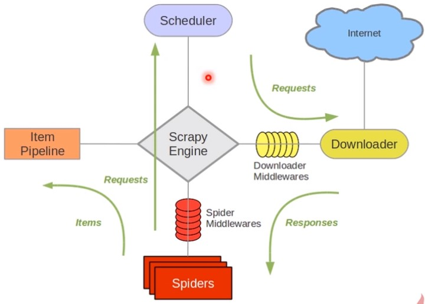

pip install scrapy 编译Twised时需要Visual C++ Build Tools，可以在这来下载安装：Microsoft Visual C++ Build Tools

scrapy爬虫项目开发分成四步：新建项目、明确目标、制作爬虫、存储内容
scrapy startproject doubanscrapy genspider douban_spider movie.douban.com分析https://movie.douban.com/top250，需要抓取序号、电影名、导演、演员、星级、评价数、描述等。
# 序号
serial_number = scrapy.Field()
# 电影的名称
movie_name = scrapy.Field()
# 电影的介绍
introduce = scrapy.Field()
# 星级
star = scrapy.Field()
# 电影的评论数
evaluate = scrapy.Field()
# 电影的描述
describe = scrapy.Field()
class DoubanSpiderSpider(scrapy.Spider):
# 爬虫名称
name = 'douban_spider'
# 允许的域名
allowed_domains = ['movie.douban.com']
# 入口url，扔到调度器里面去
start_urls = ['https://movie.douban.com/top250']
def parse(self, response):
print(response.text)
进入douban\spiders目录，执行：scrapy crawl douban_spider
windows下运行会出现错误：
Could not find a version that satisfies the requirement win32api (from versions: ) No matching distribution found for win32api 解决办法：
pip install pypiwin32
远程运行，新建main.py
from scrapy import cmdline
cmdline.execute('scrapy crawl douban_spider'.split())